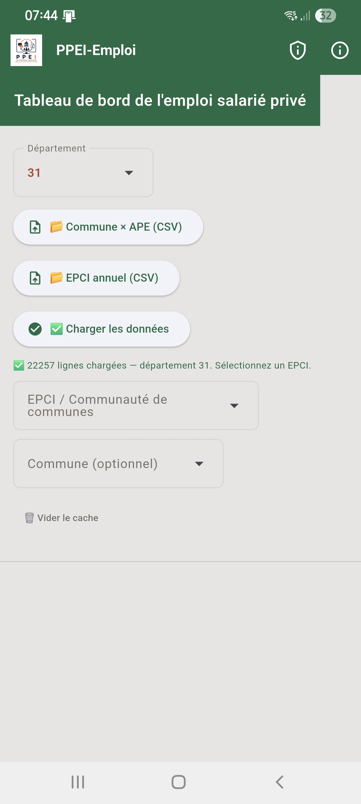
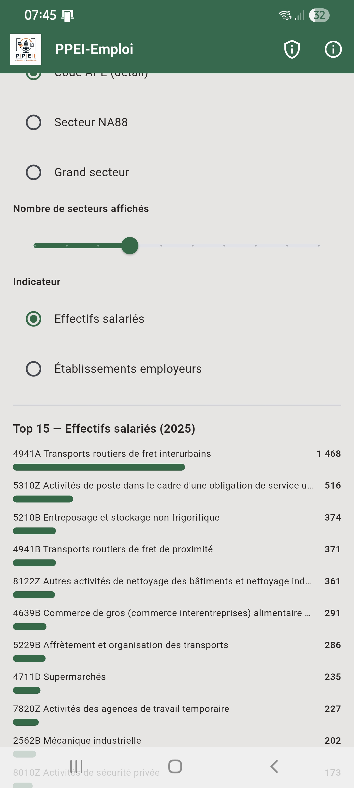
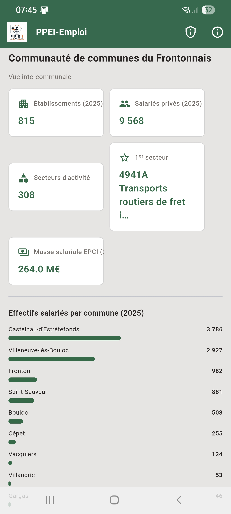
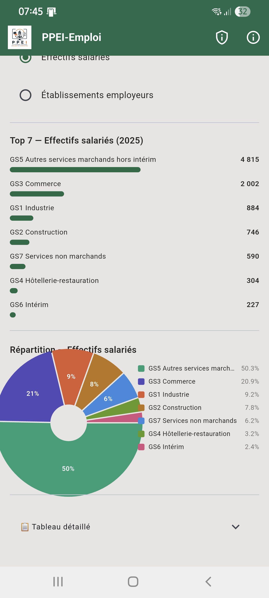
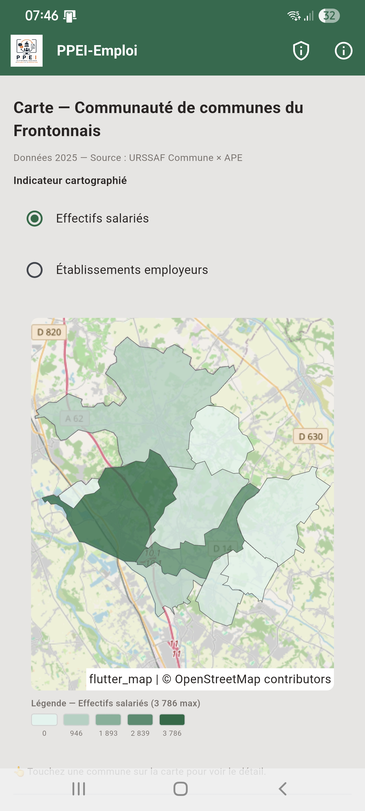

Fonctionnalités
- Vue globale des effectifs salariés du territoire
- Répartition par secteur d'activité (code APE)
- Carte par commune avec identification automatique du contour (API Géo)
- Filtre en cascade Département → EPCI → Commune
- Export CSV et PDF
Disponibilité
| Plateforme | Statut | Android | Disponible |
|---|
Source des données
PPEI-Emploi fonctionne à partir de deux fichiers CSV en open data de l'URSSAF (open.urssaf.fr), que vous importez vous-même dans l'application via le sélecteur de fichier — aucune donnée n'est préchargée ni transmise à un serveur.
Les deux fichiers attendus
Commune × APE — effectifs salariés et nombre d'établissements du secteur privé, par commune et par secteur d'activité (code APE), une colonne par année de 2006 à 2025.
EPCI (annuel) — nombre d'établissements, effectifs salariés moyens et masse salariale du secteur privé, par EPCI et par année (une ligne par EPCI × année).
Télécharger le millésime 2025
Pour simplifier la prise en main, une copie des deux fichiers (millésime 2025, tels que publiés sur open.urssaf.fr) est disponible directement :
Pour un millésime plus récent une fois publié, retrouvez ces deux jeux de données à jour dans le catalogue de données open.urssaf.fr (recherchez « commune x APE » et « EPCI »).
Captures d'écran





Télécharger
Téléchargements pour PPEI-Emploi :